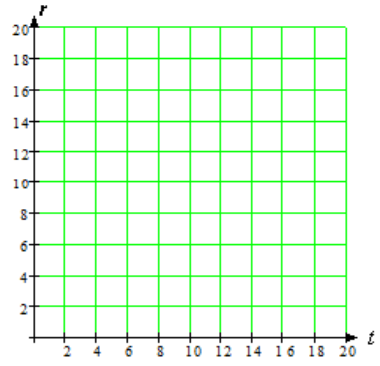

Section 4.2 Systems of Linear Equations
Subsection What is a System of Equations?
In many applications it is useful to write two or more linear equations.
Example 4.9.
Delbert and Francine are buying appliances for their new home. They have a choice of two different refrigerators: a standard model that sells for $1000, or an energy-efficient model at a price of $1200. The standard model costs $6 per month to run, and the energy-efficient model costs $2 per month. Write linear equations for the total cost of each refrigerator after \(t\) months.
Let \(S\) stand for the total cost of running the standard refrigerator for \(t\) months, so \(S=mt+b\text{.}\) The initial cost of the standard model is $1000, so \(b=1000\text{.}\) The cost increases at a rate of $6 per month, so \(m=6\text{.}\) Thus,
Let \(E\) stand for the total cost of running the energy-efficient refrigerator. For this model, the initial cost is \(b=1200\text{,}\) and the total cost increases at a rate of \(2\) dollars per month. Thus,
Look Closer.
When we consider two equations together, as in the example above, we often use the same variables for both equations, like this:
System.
A pair of linear equations with the same variables is called a system of linear equations.
In Example 4.9, the standard refrigerator costs less initially, but costs more to run each month. Delbert and Francine want to know when the energy-efficient model will begin to pay for itself, or in other words, when the total cost of running the standard model will exceed the total cost of the energy-efficient model.
Example 4.10.
When is the total cost of running the two refrigerators in Example 4.9 equal?
We would like to know the value of \(t\) when \(S=E\text{.}\) We could use trial-and-error by evaluating both \(S\) and \(E\) for various values of \(t\text{.}\) The results of such a search are given in the table below.
| \(t\) | \(10\) | \(20\) | \(30\) | \(40\) | \(50\) |
| \(S\) | \(1060\) | \(1120\) | \(1180\) | \(1240\) | \(1300\) |
| \(E\) | \(1220\) | \(1240\) | \(1260\) | \(1280\) | \(1300\) |
We see that when \(t=50\text{,}\) the total cost of both models is $1300. Thus, at the end of 50 months, or 4 years 2 months, the cost of the standard model equals the cost of the energy-efficient model.
In Example 4.10 we found an ordered pair, \((50,1300)\text{,}\)that makes both equations true.
Solution to a System.
A solution to a system of equations is an ordered pair \((x,y)\) that satisfies each equation in the system.
To check whether \((50,1300)\) is really a solution of the system, we substitute the coordinates into each equation.
We have verified that the ordered pair \((50,1300)\) is a solution to the system in Example 4.9.
Reading Questions Reading Questions
1.
What is a solution to a system of equations?
2.
Decide whether the ordered pair \((2,3)\) is a solution to the system
Subsection Solving a System of Equations by Graphing
The solution of a system satisfies both equations in the system, so the point that represents the solution must lie on both graphs. It is the intersection point of the two lines described by the system. Thus, we can solve a system of equations by graphing the equations and looking for the point (or points) where the graphs intersect.
Example 4.11.
Solve the system in Example 4.9 by graphing.
The graph of the two equations is shown below. The graph of \(S\) has a smaller initial value than \(E\text{,}\) but it increases more rapidly because its slope is greater. The two graphs intersect at the point labeled \(P\text{.}\)

At this point the values of \(S\) and \(E\) are the same, approximately 1300. The \(t\)-coordinate of point is 50, so the solution of the system is \((50,1300)\text{.}\) The total cost of each model is about $1300 over the first 50 months of operation.
After 50 months, the total cost of the energy-efficient model will be less than the cost of the standard model.
Reading Questions Reading Questions
3.
How do we find the solution to a system of equations by graphing?
Subsection Inconsistent and Dependent Systems
Example 4.12.
Delbert and Francine are also shopping for homeowners insurance. HomeLife offers a policy for semiannual premiums of $408, or they can join a co-op for $50 and pay just $68 per month for comparable coverage. Which option is less expensive in the long run?
We'll write a system of equations and graph them, as we did in Example 4.11. If \(t\) stands for the number of months, then the total cost of the co-op insurance is
and the HomeLife policy costs
because a semiannual premium covers 6 months. The solution of the system represents the time when the costs of the two policies are equal. The graphs of the two equations are shown below.

As you can see, the two lines are parallel, so the graphs do not intersect. This system has no solution. There is no point where the two policies cost the same amount; the HomeLife policy is always less expensive.
In Example 4.12, the two graphs never intersect, so the system has no solution. Such a system is called inconsistent. There is a third possibility: Both equations may have the same graph.
Example 4.13.
Solve the system
We graph the first equation by the slope-intercept method:
Its graph is shown below.

The second equation, which has the form \(Ax+By=C\text{,}\) is easier to graph by the intercept method. You can verify that its intercepts are \((0,2)\) and \((-1,0)\text{.}\) The graph of the second line is identical to the first graph.
Every solution to the first equation is also a solution to the second equation, so every point on the line is a solution of the system as well. The system has infinitely many solutions.
We can verify that the two equations in Example 4.13 are actually equivalent by solving the second equation for \(y\) in terms of \(x\text{.}\)
The second equation is the same as the first equation. A system in which the two equations are equivalent is called dependent. A dependent system has infinitely many solutions: Every point on the graph is a solution to the system.
We have now seen three types of systems. These are illustrated in the figure below. Most of the systems we will study have exactly one solution. Such systems are called consistent and independent.

- Consistent and independent system. The graphs of the two lines intersect in exactly one point. The system has exactly one solution.
- Inconsistent system. The graphs of the equations are parallel lines and hence do not intersect. An inconsistent system has no solutions.
- Dependent system. All the solutions of one equation are also solutions to the second equation, and hence are solutions of the system. The graphs of the two equations are the same line. A dependent system has infinitely many solutions.
Reading Questions Reading Questions
4.
What does the graph of an inconsistent system look like? How many solutions does it have?
5.
What does the graph of a dependent system look like? How many solutions does it have?
Subsection Problem Solving with Systems
Many practical problems involve two or more unknown quantities. Often it is easier to solve these problems by using two variables and writing a system of equations.
Example 4.14.
Allen has been asked to design a rectangular Plexiglas plate whose perimeter is 28 inches and whose length is three times its width. What should the dimensions of the plate be?
Step 1 The dimensions of a rectangle are its length and width, so we let \(x\) represent the width of the plate and \(y\) represent its length.
Step 2 We must write two equations about the length and width of the plate. We know a formula for the perimeter of a rectangle, \(P=2l+2w\text{,}\) so the first equation is
We also know that the length is three times the width, or \(y=3x\text{.}\) These two equations make a system.
Step 3 We use the intercept method to graph the first equation, \(2x+2y=28\text{:}\)
| \(x\) | \(y\) | \(\hphantom{0000}\) |
| \(0\) | \(14\) | \(\blert{\text{When}~ x=0,~y=14}\) |
| \(14\) | \(0\) | \(\blert{\text{When}~ y=0,~x=14}\) |
We use the slope-intercept method to graph \(y=3x\text{:}\)
Their graphs are shown below.

Step 4 The width of the plate should be 3.5 inches and its length should be 10.5 inches.
Reading Questions Reading Questions
6.
When might you use a system of equations to solve an applied problem?
Subsection Skills Warm-Up
Exercises Exercises
Write algebraic expressions to answer the questions.
1.
How much interest is earned after 2 years on \(d+50\) dollars at 6% annual interest rate?
2.
How much manganese is there in \(8-z\) grams of an alloy that is 35% manganese?
3.
How far will a boat travel in 2 hours at a speed of \(r+3\) miles per hour?
4.
How far will a train moving at 40 miles per hour travel in \(3+x\) hours?
5.
A small plane has a top airspeed of \(v\) miles per hour. How far can the plane travel in 5 hours against a headwind of 15 miles per hour?
6.
A fishing boat has a top speed in still water of 26 miles per hour. How far can the boat travel downstream in 3 hours if the speed of the current is \(w\) miles per hour?
Subsubsection Answers to Skills Warm-Up
- \(\displaystyle 0.12(d+50)\)
- \(\displaystyle 0.35(8-z)\)
- \(\displaystyle 2(r+3)\)
- \(\displaystyle 40(3+x)\)
- \(\displaystyle 5(v-15)\)
- \(\displaystyle 3(26+w)\)
Subsection Lesson
Subsubsection Activity 1: Solving Systems by Graphing
A biologist wants to know the average weights of two species of birds in a wildlife preserve. She sets up a feeder whose platform is actually a scale, and mounts a camera to monitor the feeder. She waits until the feeder is occupied only by members of the two species she is studying, robins and thrushes. Then she takes a picture, which records the number of each species on the scale, and the total weight registered.
From her two best pictures, she obtains the following information.
- The total weight of three thrushes and six robins is 48 ounces, and
- The total weight of five thrushes and two robins is 32 ounces.
-
Begin by assigning variables to the two unknown quantities:
\begin{gather*} \blert{\text{Average weight of a thrush:}~~t}\\ \blert{\text{Average weight of a robin:}~~r} \end{gather*}Write two equations about the weights of the birds:
\begin{align*} \amp~~~~\blert{\text{(weight of thrushes)}}~+~\blert{\text{(weight of robins)}}~=~\blert{\text{total weight}}\\ (1)\amp\\ (2)\amp \end{align*} Use the intercept method to graph each equation on the grid at right.
Equation (1):
\(t\) \(0\) \(\hphantom{0000}\) \(r\) \(\hphantom{0000}\) \(0\) Equation (2):
\(t\) \(0\) \(\hphantom{0000}\) \(r\) \(\hphantom{0000}\) \(0\) -
Locate the point where the two graphs intersect. What are its coordinates?
Answer the question posed by the biologist.
Subsubsection Activity 2: Problem Solving
The manager for Books for Cooks plans to spend $300 stocking a new diet cookbook. The paperback version costs her $5, and the hardback costs $10. She finds that she will sell three times as many paperbacks as hardbacks. How many of each should she buy?
Let \(x\) represent the number of hardbacks and \(y\) the number of paperbacks she should buy.
- Write an equation about the cost of the books.
- Write a second equation about the number of each type of book.
- Graph both equations on the grid and solve the system. Then answer the question in the problem.
Subsubsection Activity 3: Inconsistent and Dependent Systems
Robert and Ruth are moving from Los Angeles to Baltimore. Robert is driving a rental truck at an average speed of 50 miles per hour. Ruth leaves one day later in their car, and averages 65 miles per hour. When Ruth set out, Robert had already traveled 300 miles. When will Ruth catch up with Robert?
Exercises Exercises
1.
Let \(t\) stand for the number of hours that Ruth has traveled. When she catches up with Robert, they will both have traveled the same distance, so we begin by writing equations for the distance, \(d\text{,}\) each has traveled after \(t\) hours.
- Ruth travels at 65 miles per hour, so an equation for the distance she has traveled is\begin{equation*} \blert{\text{Ruth's distance:}}~~~d = \end{equation*}
- Robert's speed is 50 miles per hour, but he has already traveled 300 miles when Ruth starts, so his distance is given by\begin{equation*} \blert{\text{Robert's distance:}}~~~d = \end{equation*}
- Together, the two equations form a system:
2.
Next, we graph both equations on the same axes.
To graph the equation for Ruth's distance, plot a few points.
\(t\) \(0\) \(10\) \(20\) \(d\) \(\hphantom{0000}\) \(\hphantom{0000}\) \(\hphantom{0000}\) - To graph the equation for Robert's distance, use the vertical intercept and the slope.
- Locate the point where the two graphs intersect. What are its coordinates?
3.
Finally, we interpret the solution.
- What does the \(t\)-coordinate of the intersection point tell you about the problem?
- What does the \(d\)-coordinate of the point tell you?
- Verify that the intersection point is a solution of both equations in the system.
4.
Now let's change the problem and suppose instead that Ruth and Robert both drive at an average speed of 50 miles per hour.
-
Write a system of equations for this problem:
Robert: \(~~~d=\)
Ruth: \(~~~~d=\)
- Graph the equations on the grid.
- What is the solution of this system? What is this type of system called?
5.
-
Graph the system of equations.
\begin{align*} 3x \amp = 2y+6\\ y \amp = \dfrac{3}{2}x-3 \end{align*}Hint: Use the intercept method to graph the first equation, and the slope-intercept method to graph the second equation.
- Is the system inconsistent or dependent?
Subsubsection Wrap-Up
Objectives.
In this Lesson we practiced the following skills:
- Deciding whether an ordered pair is a solution of a system
- Solving a system of equations by graphing
- Identifing a system as consistent, inconsistent, or dependent
- Writing a system of equations to solve an applied problem
Questions.
- In Activity 1, how far has Robert traveled at \(t=0\text{?}\)
- In Activity 2, Problem 1, explain why it makes sense that the system has no solution.
- In Activity 3, which equation is correct: \(x=3y\) or \(y=3x\text{?}\) Why?
- In Activity 3, how much did the manager spend on hardback books? How much on paperback books?
Subsection Homework Preview
Exercises Exercises
1.
Is \((-3,5)\) a solution of the system?
Explain how you know.
2.
Solve the system by graphing.
Hint: Graph the first equation by the slope-intercept method, and the second equation by the intercept method.
3.
Write a system of equations for the problem:
Kathy has two cats, Miso and Nori. Together they weigh 18 pounds. Miso's weight is 3 pounds more than half of Nori's weight. How much does each cat weigh?
4.
Decide whether the system is inconsistent or dependent.
Subsubsection Answers to Homework Preview
- No
- \(\displaystyle (3,-2)\)
- \begin{align*} x \amp +y = 18\\ y \amp = \dfrac{1}{2}x+3 \end{align*}
- Inconsistent
Exercises Homework 4.2
For Problems 1–2, decide whether the given ordered pair is a solution of the system.
1.
\(\begin{aligned}[t] x+2y\amp=-8\amp\amp (4,-2)\\ 2x-y\amp=4 \end{aligned}\)
2.
\(\begin{aligned}[t] 3x+2y\amp=-5\amp\amp (-3,-2)\\ x+3y\amp=-9 \end{aligned}\)
For Problems 3–5, decide which graphing technique, the intercept method or the slope-intercept method, would be easier to use. Explain why you made the choice you did.
3.
\(3x-2y=18\)4.
\(y=\dfrac{5x}{3}-8\)5.
\(y=\dfrac{-5}{6}x\)For Problems 6–9, solve the system by graphing.
6.
\(\begin{aligned}[t] y\amp=-3x\\ y\amp=3x-6 \end{aligned}\)

7.
\(\begin{aligned}[t] \amp y=\dfrac{3}{4}x-2\\ \amp 2y-5x=10 \end{aligned}\)
8.
\(\begin{aligned}[t] \amp x+y=4\\ \amp 3x-3y=12 \end{aligned}\)
9.
\(\begin{aligned}[t] \amp 2y=-3x\\ \amp y=-2x-1 \end{aligned}\)
For Problems 10–11, decide whether the system is dependent or inconsistent.
10.
\(\begin{aligned}[t] \amp x+y=4\\ \amp 2x+2y=12 \end{aligned}\)
11.
\(\begin{aligned}[t] \amp y=-2x+4\\ \amp 4x+2y=2 \end{aligned}\)
12.
Without graphing, explain how you can tell that the system has no solution.
13.
Delbert has accepted a sales job and is offered a choice of two salary plans. Under Plan A he receives $20,000 a year plus a 3% commission on his sales. Plan B offers a $15,000 annual salary plus a 5% commission.
-
Let \(x\) stand for the amount of Delbert's sales in one year. Write equations for his total annual earnings, \(E\text{,}\) under each plan.
\begin{gather*} \text{Plan A:}~~~E =\\ \text{Plan B:}~~~E = \end{gather*} Fill in the tables, where \(x\) is given in thousands of dollars.
\(x\) Earnings Under Plan A \(0\) \(\hphantom{0000}\) \(50\) \(\hphantom{0000}\) \(100\) \(\hphantom{0000}\) \(150\) \(\hphantom{0000}\) \(200\) \(\hphantom{0000}\) \(250\) \(\hphantom{0000}\) \(300\) \(\hphantom{0000}\) \(350\) \(\hphantom{0000}\) \(400\) \(\hphantom{0000}\) \(x\) Earnings Under Plan B \(0\) \(\hphantom{0000}\) \(50\) \(\hphantom{0000}\) \(100\) \(\hphantom{0000}\) \(150\) \(\hphantom{0000}\) \(200\) \(\hphantom{0000}\) \(250\) \(\hphantom{0000}\) \(300\) \(\hphantom{0000}\) \(350\) \(\hphantom{0000}\) \(400\) \(\hphantom{0000}\) -
Graph both of your equations on the grid. (Both axes are scaled in thousands of dollars.)

- For what sales amount do the two plans result in equal earnings for Delbert?
14.
Orpheus Music plans to manufacture clarinets for schools. Their startup costs are $6000, and each clarinet costs $60 to make. They plan to sell the clarinets for $80 each.
-
Let \(x\) stand for the number of clarinets Orpheus manufactures. Write equations for the total cost, \(C\text{,}\) of producing \(x\) clarinets, and the revenue, \(R\text{,}\) earned from selling \(x\) clarinets.
\begin{gather*} \text{Cost}~~~C =\\ \text{Revenue}~~~R = \end{gather*} Fill in the tables, where \(x\) is given in thousands of dollars.
\(x\) Cost \(0\) \(\hphantom{0000}\) \(50\) \(\hphantom{0000}\) \(100\) \(\hphantom{0000}\) \(150\) \(\hphantom{0000}\) \(200\) \(\hphantom{0000}\) \(250\) \(\hphantom{0000}\) \(300\) \(\hphantom{0000}\) \(350\) \(\hphantom{0000}\) \(400\) \(\hphantom{0000}\) \(x\) Revenue \(0\) \(\hphantom{0000}\) \(50\) \(\hphantom{0000}\) \(100\) \(\hphantom{0000}\) \(150\) \(\hphantom{0000}\) \(200\) \(\hphantom{0000}\) \(250\) \(\hphantom{0000}\) \(300\) \(\hphantom{0000}\) \(350\) \(\hphantom{0000}\) \(400\) \(\hphantom{0000}\) -
Graph both of your equations on the grid. (The vertical axis is scaled in thousands of dollars.)

- How many clarinets must Orpheus sell in order to break even?
- What is their profit if they sell 500 clarinets? 200 clarinets?
- Illustrate your answers to part (e) on your graph.
For Problems 15–16,
- Choose a variable for each of the unknown quantities.
- Write a system of equations in two variables to model the problem.
- Solve the system graphically.
- Verify your solution algebraically.
15.
A bouquet of 4 roses and 8 carnations costs $14. A bouquet of 6 roses and 9 carnations costs $18. How much do one rose and one carnation cost?

16.
The vertex angle of an isosceles triangle is \(15 \degree\) less than each base angle. (In an isosceles triangle, the base angles are equal.) Find the measure of each angle of the triangle. (Hint: For your second equation, recall that the sum of the angles in any triangle is \(180 \degree\text{.}\)